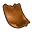

Lv 35 Armor Quest
Help shopkeepers in Acropolis open their armor and shoe shops.
- Items needed
- Materials for each shopkeeper, based on your level (below 20 or 20+)
- Reward
- Four Lv 35 shops (metal armor, magic armor, cloth armor, shoes) and 1 skill point
On this page
Before you start
- Talk to each shopkeeper once. He or she picks one request at random and keeps asking for it until you bring it.
- What they ask for depends on your level when you first talk to them. The level 20+ requests are smaller and easier to collect.
- You don't have to open all four.
Walkthrough
1. Metal armor: Apprentice Blacksmith Arus
-
Go to Uptown and talk to Apprentice Blacksmith Arus on the south side.
-
He asks for one of these:
Your level He asks for one of Below 20 - 170 ×
 Tree Branch
Tree Branch - 10 ×
 Timber
Timber - 40 ×
 Pebble
Pebble - 10 × Solid Pebble
- 10 ×
 Iron Lump
Iron Lump - 40 ×
 Bone
Bone
20 and higher 1 of each:or 1 of each: - 170 ×
-
Bring the items back. He opens his shop of metal armor for Swordsman, Fencer, Scout, Archer (
 Archer Mail) and Ranger (
Archer Mail) and Ranger ( Camouflage Armor):
Camouflage Armor):Swordsman, Fencer and Scout lines
Swordsman, Blade Master, Bounty Hunter
Fencer, Knight, Dark Stalker
Archer, Striker, Gunner
Ranger, Explorer, Treasure Hunter
 Apprentice Blacksmith Arus
Apprentice Blacksmith Arus

2. Cloth armor: Sapane
-
She asks for one of these:
Your level She asks for one of Below 20 - 12 ×
 Needle
Needle - 60 ×
 Flower
Flower - 3 ×
 Orange Powder
Orange Powder - 3 ×
 Blue Powder
Blue Powder - 3 ×
 Lime Green Powder
Lime Green Powder - 60 ×
 Cloth
Cloth
20 and higher - 10 ×
 Bouquet
Bouquet - 15 ×

Leather
- 12 ×
-
Bring the items back. She opens her shop of cloth armor for Scout, Archer and the Backpacker jobs:
All Backpacker jobs, Breeder, Gardener
Scout, Assassin, Commando
Archer, Striker, Gunner
Farmer, Alchemist, Marionettist
Ranger, Explorer, Treasure Hunter
Merchant, Trader, Gambler
 Sapane
Sapane
3. Shoes: Solo
-
He asks for one of these:
Your level He asks for one of Below 20 - 60 ×
 Muddy Water
Muddy Water - 60 ×
 Wild Rosebush Thorn
Wild Rosebush Thorn - 20 ×
 Charcoal
Charcoal - 170 ×
 Urchin Throw
Urchin Throw
20 and higher - 60 ×
 Mana Water
Mana Water - 10 ×
 Wisp Dust
Wisp Dust
- 60 ×
-
Bring the items back. He opens his shop of shoes:
All jobs
Warlock, Cabalist, Necromancer
Miner (Tatarabe), Blacksmith, Engineer (Machinery)
Ranger, Explorer, Treasure Hunter
 Solo
Solo4. Magic armor: Kuma Taro
-
Go to Northern Promenade and enter the Northern Cafe. Talk to Kuma Taro.
-
He asks for one of these:
Your level He asks for one of Below 20 - 30 ×
 Jam
Jam - 30 ×
 Apple Jam
Apple Jam - 30 ×
 Orange Jam
Orange Jam - 30 × Apricot Jam
- 30 ×
 Fruit Juice
Fruit Juice - 30 × Apricot Juice
- 30 × Apple Juice
- 30 ×
 Orange Juice
Orange Juice - 50 ×
 Boiled Egg
Boiled Egg - 85 ×
 Butter
Butter
20 and higher - 30 ×
 Organic Meat
Organic Meat - 3 × Caviar
- 30 ×
-
Bring the items back. He opens his shop of magic armor for the Spell User jobs:
All Spell User jobs
Wizard, Sorcerer, Sage
Shaman, Elementalist, Enchanter
Vates, Druid, Bard
Warlock, Cabalist, Necromancer
 Kuma Taro
Kuma Taro
5. Collect the skill point
-
When all four shops are open, go to Downtown and talk to the Elegant Lady. She gives you 1 skill point.
 Elegant Lady
Elegant Lady

Rewards
| Reward | Notes |
|---|---|
| Metal armor shop | Apprentice Blacksmith Arus, Uptown |
| Cloth armor shop | Sapane, Uptown |
| Shoe shop | Solo, Uptown |
| Magic armor shop | Kuma Taro, Northern Cafe, Northern Promenade |
| 1 skill point | Elegant Lady, Downtown, after all four shops are open |